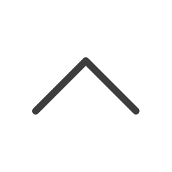
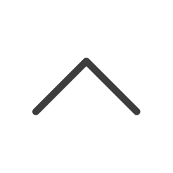

聯絡我

聯絡我
網頁設計 UX 研究 & 設計 | 2022

TeamJoined 是一個提供健身人優質護具、服飾的品牌。為鞏固原有客戶同時也能拓展新客，公司策略決定發展「會員制度」提高使用者對品牌的忠誠度，也希望能在官網曝光相關資訊，提高使用者加入 TeamJoined 會員的意願，也同時希望使用者能夠將「接受 E-mail 推播」的選項開啟，以解決一直以來 EDM 傳達數低下的痛點。
執行項目
競品分析、使用者研究、網頁設計、UX Writing、跨部門溝通
專案時長
2022/10 ~ 2022/10（2 週）
團隊成員
UX/I 設計師 (我), 平面設計師 (2), 行銷團隊 (2)
專案時程僅短短 2 週、且無工程師需要自行切版上線
有限時間內，以最有效率的方式，建立會員制度網頁，提供相關資訊，吸引註冊，同時導流舊顧客回頭開啟接收 Mail 通知的選項
繼續看
↓使用者研究
這是一個非常急迫的專案，因此我將執行項目切分成 3 塊，研究、設計、coding。我希望使用最低成本且效率最高的方式執行研究，並將大部分時間投入在設計與 coding 中。因此我與行銷主管約了面談，並進行了使用者輪廓的訪談。
專案時程規劃 各項佔比
擬定訪談問題
訪談觀察紀錄
當下討論網頁流
競品分析
因為專案的急迫，我選擇研究網路上相關競品的會員制度頁面，快速理解產業標準與直接擷取競品經驗；藉由分析競品架構安排，再評估如何安排成適合 TeamJoined 的網頁架構。
首先我上網搜尋平常瀏覽的競品網站，初步了解他們是如何進行會員制度的網頁規劃與 UX Writing；由左至右是 Nike, Adidas, Lululemon, Adar, UA, NB。

手機版

電腦版
在瀏覽了解基本網頁規劃後，我打算先專注網頁架構的拆解，畫出 Wireframes 後再選擇需要的區塊做 UX Writing
的分析，以達到最大效率！
首先我將專注於使用者比例較高的「行動裝置」，把他們用方塊把每個關注點區分開來，這樣我們就能得到以下的網頁版位架構！

根據這些架構，我能找出競品做網頁版位規劃的規律：
了解以上發現後，我必須將我們品牌規劃、使用者的特性加入考量，相互融合，誕生專屬於 TeamJoined 的會員制度網頁版位架構。

整合以上洞見後，我將快速進入聚焦，對手機版的網頁版位做最初步的規劃，提供老闆與行銷團隊了解
跨團隊溝通
為後續的安排，與來回修改的困難避免，在初步研究完成，先與團隊進行前期共識；除了確認設計方向，同時也報告時程安排，與跨團隊資源需求。
建立線框圖（Wireframes）
在了解手機版的網頁版位安排後，桌機版本將根據手機的架構做安排，以避免 coding 上的困難；此外架構出來後，手機 layout 也相對容易，因此我這部分將僅分析「桌機版」且「版位規劃相近」的競品網站做 layout 分析。
Lululemon
Nike
Adidas
我把競品的 layout 吸收內化，結合得出多種桌機版想法，並轉ß化成最適合 TeamJoined 會員制度頁面的 Wireframes。
我先使用手繪的方式，執行 Wireframing，以求最快的速度產出最多的想法！以下是「手機版」「桌機版」的 Paper Wireframes，讓我們一起看看吧！
在完成 Paper Wireframes 後，也重新審視「手機版」架構是否有跑掉，很慶幸的，Paper Wireframes 都有照架構安排！

繼續看
↓建立線框圖（Wireframes）
最終我與品牌行銷決定了其中一個版本，主要針對「使用者習慣、品牌策略、競品研究、行銷策略、現有素材」，5 個評斷標準判斷，接著一起欣賞成果吧！
手機版
桌機版
Web Design
擷取既有的官網 UI 設計系統，將其整理成 coding 的設計系統，並且使用 html, css 將設計化為現實！
手機版
桌機版

我對設計的想法就是在限制中做出最佳的問題解法並執行。這份專案雖然限制很多，時程緊湊又需要跨部門協商，同時需自行從研究 > 設計 > 完成實現。但這也是設計的樂趣與精髓，這是以往不曾遇到的，也學習到許多溝通技巧，與共同協作。讓我又對設計更瞭解了一點！
--- UX Designer ---
©Aaron Wong 2022